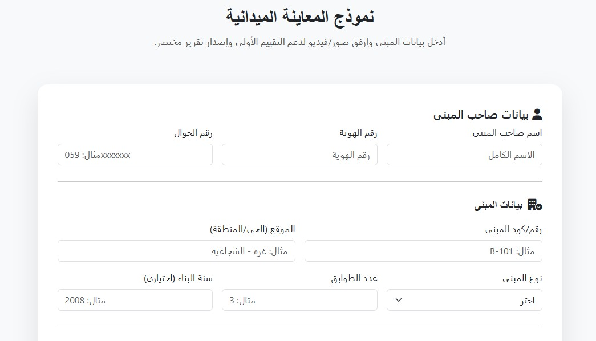
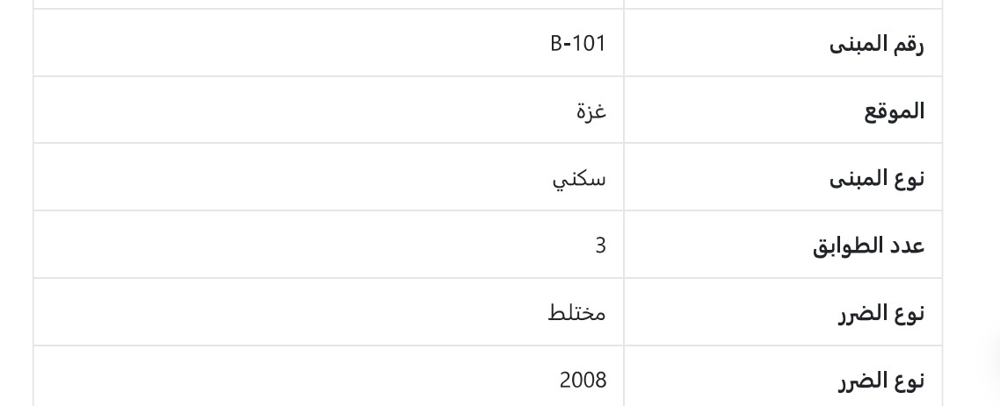

معرض الأعمال
نماذج توضيحية لمخرجات المنصة وسيناريوهات تقييم المباني المتضررة.



تساعد المهندس الميداني على توثيق الأضرار وإجراء تقييم أولي لمستوى الخطورة وإصدار تقرير مختصر يدعم اتخاذ القرار.
بعد حرب 2023 على غزة، تعرضت مبانٍ كثيرة لأضرار جزئية. توفر هذه المنصة نموذجًا موحدًا للمعاينة الميدانية وتوليد تقرير مبدئي يساعد في اتخاذ قرار أولي حول السلامة والتدخل المطلوب.
المهندسون الميدانيون، فرق التقييم، المنظمات الإنسانية، ولجان إعادة الإعمار.
توفر المنصة مجموعة من الأدوات لمساعدة الفرق الهندسية في تقييم الأضرار واتخاذ القرار المبدئي بسرعة ودقة.
تسجيل الأضرار الإنشائية وغير الإنشائية للمبنى بطريقة منظمة لدعم عملية التقييم.
إجراء تقييم مبدئي لسلامة المبنى وتحديد مدى صلاحيته للاستخدام أو الحاجة للتدخل.
إرفاق صور توثيقية للأضرار لدعم القرار الهندسي وإعداد التقارير.
إنشاء تقرير مبدئي يلخص حالة المبنى ومستوى الخطورة بشكل قابل للطباعة.
تسهيل عمل الفرق الهندسية والمنظمات الإنسانية من خلال واجهة موحدة.
تسجيل الموقع الجغرافي للمبنى لدعم إدارة البيانات والتخطيط المستقبلي.
نماذج توضيحية لمخرجات المنصة وسيناريوهات تقييم المباني المتضررة.
في حال وجود أي استفسار أو رغبة بالتواصل مع فريق المنصة، يرجى تعبئة النموذج التالي.
فيديو توضيحي يشرح فكرة المنصة وآلية تقييم المباني المتضررة.
يتيح هذا النموذج للمهندس الميداني إدخال بيانات المبنى وصاحبه، توثيق الأضرار، وتوليد تقرير مبدئي قابل للطباعة لدعم اتخاذ القرار.